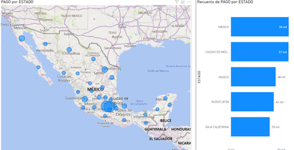

Pablo Díaz Avila
Data Engineer · Analytics & BI
Data Engineer · Analytics & BI
These are selected data engineering and analytics solutions I’ve delivered, designed to transform raw data into actionable insights, optimize reporting processes, and enhance operational performance.
Billing, Collections & Accounts Receivable BI
Power BI · DAX · FinanceTelefónica Movistar
Deloitte
Nestlé
MVS Radio
MVS Radio
Grupo Salinas
Purpose: Provide financial visibility across billing, collections and AR.
KPIs: Aging buckets, recovery rate, outstanding balance.
DAX: Time intelligence, cumulative collections, delinquency ratios.
Impact: Improved executive decision-making and operational follow-up.

